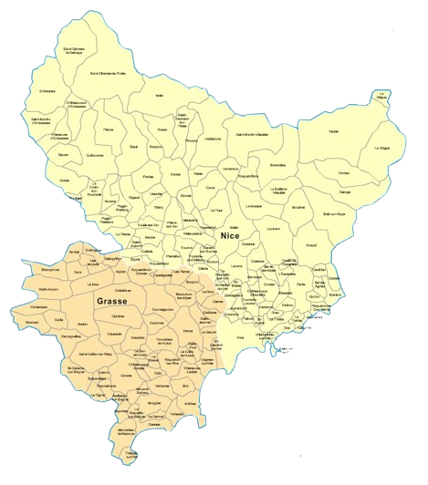

DEVIS GRATUIT
NOS SERVICES

Redonnez éclat et transparence à vos vitres grâce à un nettoyage en profondeur. Cette prestation préventive élimine efficacement les traces, salissures et impuretés, tout en réduisant la fréquence d’entretien. Nos spécialistes assurent une propreté durable et une brillance optimale pour vos surfaces vitrées.
CONTACTEZ - NOUS
Experts en nettoyage de fin de chantier, nous vous proposons des solutions complètes pour garantir la propreté et la remise en état de vos locaux après travaux. Notre intervention assure un environnement sain, dégagé de poussières, résidus et débris, prêt à être utilisé ou livré.
CONTACTEZ - NOUS
Nos équipes assurent l’entretien complet de vos parties communes : sols, escaliers, halls et couloirs. Nous intervenons régulièrement avec des prestations conformes aux normes d’hygiène, adaptées aux besoins de vos copropriétés et immeubles pour garantir des espaces propres et accueillants au quotidien.
CONTACTEZ - NOUSNettoyage de vitres professionnel : Pour offrir à vos locaux une clarté optimale et des surfaces impeccables, notre équipe assure un nettoyage soigné et régulier de toutes vos vitres. Nous intervenons dans tout le département des Alpes-Maritimes avec du matériel adapté et des techniques professionnelles garantissant brillance et transparence.
Nettoyage de fin de chantier : Nous prenons en charge l’ensemble du nettoyage après travaux, du déblayage des résidus jusqu’à la remise en état complète des lieux. Entreprise de nettoyage 06 vous garantit une intervention conforme aux normes d’hygiène et des résultats impeccables, prêts à l’utilisation.
Nettoyage de copropriété : Pour garantir des parties communes toujours propres et agréables, faites confiance à nos professionnels pour l’entretien régulier de vos halls, escaliers, couloirs et espaces collectifs dans le 06. Entreprise de nettoyage 06 intervient avec efficacité et rigueur afin d’assurer confort et hygiène à vos résidents.
UNE ÉQUIPE QUALIFIÉE ET DU MATÉRIEL PROFESSIONNEL
Notre savoir-faire en nettoyage s’appuie sur une équipe expérimentée et des équipements performants. Que ce soit pour le nettoyage de vitres, le nettoyage de fin de chantier ou l’entretien des copropriétés, nous réalisons des prestations adaptées, durables et conformes aux normes d’hygiène. Dans tout le département des Alpes-Maritimes (06), nous vous garantissons des résultats impeccables et un service de qualité.
DES TARIFS
CLAIRS ET COMPÉTITIFS
Nos services de nettoyage allient efficacité et accessibilité. Que ce soit pour le nettoyage de vitres, l’entretien de copropriété ou un nettoyage de fin de chantier, nous vous proposons des solutions adaptées à vos besoins avec un excellent rapport qualité-prix. Demandez dès maintenant votre devis gratuit et personnalisé dans les Alpes-Maritimes (06).
DEVIS GRATUITPOURQUOI CHOISIR NOTRE ENTREPRISE DE NETTOYAGE DANS LES ALPES-MARITIMES (06) ?
Faire confiance à notre entreprise de nettoyage 06, c’est opter pour un service sérieux, réactif et de qualité. Reconnus dans tout le département des Alpes-Maritimes, nous assurons des interventions soignées et adaptées, qu’il s’agisse d’un nettoyage de vitres, d’un nettoyage de fin de chantier ou de l’entretien des copropriétés. Notre engagement : des résultats impeccables et durables.
DES FORMULES FLEXIBLES POUR PLUS DE SÉRÉNITÉ

INTERVENTIONS À LA DEMANDE
ENTRETIENS RÉGULIERS
Nos contrats de nettoyage sont pensés pour vous offrir confort et tranquillité. Avec Entreprise de nettoyage 06, vous profitez de prestations claires, à des tarifs transparents, que vous souhaitiez une intervention ponctuelle ou un entretien programmé. Nos services couvrent le nettoyage de vitres, le nettoyage de fin de chantier ainsi que l’entretien des copropriétés dans tout le département des Alpes-Maritimes.
INTERVENTION PARTOUT EN Alpes-Maritimes (06)
Entreprise de Nettoyage 06 se déplace dans l’ensemble du département et les communes voisines. Que ce soit pour une urgence ou un rendez-vous programmé, contactez-nous au 06 48 49 29 10 ou via notre formulaire pour recevoir un devis gratuit. Nos zones d’intervention incluent notamment : Antibes – Biot – Cagnes-sur-Mer – Cannes – Carros – Colomars – Gattières – La Colle – La Gaude – Le Cannet – Mougins – Nice – Roquefort – Saint-Laurent-du-Var – Saint-Paul – Tourrettes – Valbonne – Vallauris – Vence – Villeneuve.
UN PARTENAIRE DE CONFIANCE POUR TOUS VOS NETTOYAGES
Spécialiste reconnu dans le 06, notre entreprise de nettoyage intervient aussi bien pour les urgences que pour les prestations planifiées. Nos engagements : des services clairs, sans surprise, adaptés aux particuliers comme aux professionnels.
Que ce soit pour le nettoyage de vitres, le nettoyage de fin de chantier ou l’entretien des copropriétés, nous assurons des interventions efficaces et conformes aux normes d’hygiène pour garantir des espaces propres et accueillants.
Disponible 7j/7, notre équipe vous accompagne avec réactivité et professionnalisme pour répondre à tous vos besoins de nettoyage dans les Alpes-Maritimes (06).
QUESTIONS FRÉQUENTES
Nous proposons trois services principaux : le nettoyage de vitres professionnel, le nettoyage de fin de chantier et l'entretien des copropriétés. Nous intervenons dans tout le département des Alpes-Maritimes avec du matériel adapté et une équipe qualifiée.
Nous couvrons l'ensemble des Alpes-Maritimes (06) : Nice, Cannes, Antibes, Cagnes-sur-Mer, Vence, Mougins, Valbonne, Le Cannet, Villeneuve-Loubet, Saint-Laurent-du-Var et toutes les communes environnantes.
Vous pouvez nous contacter directement par téléphone au 06 48 49 29 10 ou via notre formulaire en ligne. Nous établissons un devis personnalisé et gratuit en fonction de vos besoins spécifiques.
Oui, nous sommes disponibles 7 jours sur 7, de 07h à 17h30, y compris le samedi et le dimanche. Notre équipe s'adapte à vos contraintes horaires pour intervenir au moment qui vous convient le mieux.